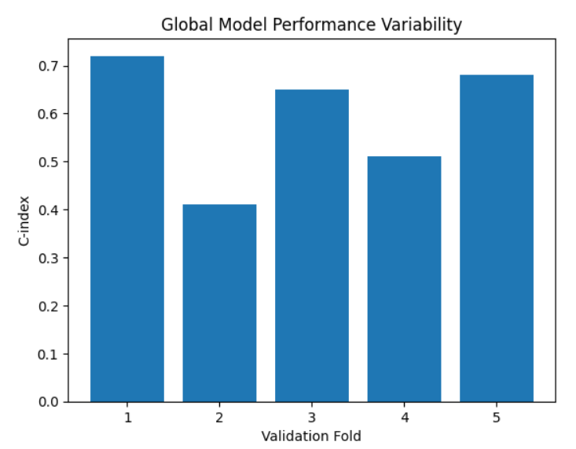
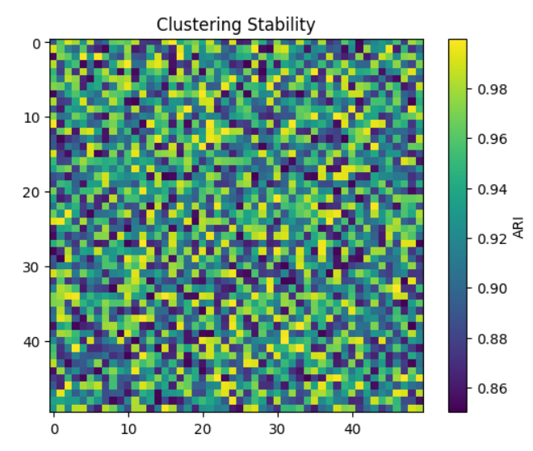
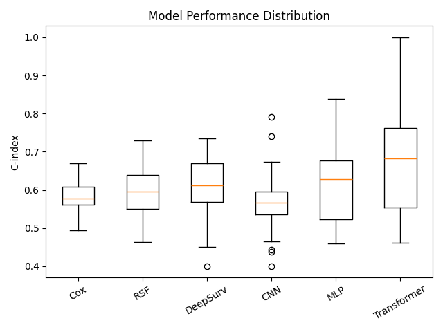
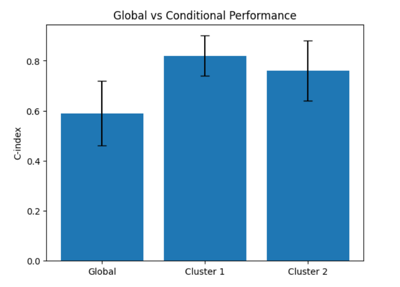

Uncovering Latent Heterogeneity in
Multimodal Survival Prediction
A diagnostic investigation into cancer prognostication, uncovering why deep fusion models behave unstably and revealing latent biological sub-groups.
Rishika Ray
Student
Manipal University Jaipur
Institution
Dr. Sayar Singh Shekhawat
Research Guide
Abstract
Multimodal deep learning models for cancer survival prediction frequently exhibit unstable and irreproducible performance, limiting their clinical applicability. Rather than proposing a new predictive architecture, this work presents a diagnostic investigation into the sources of this instability. Using a transformer-based deep fusion model combining RNA sequencing and histopathology data from the TCGA-BRCA cohort, we demonstrate that global survival prediction is highly unstable across data splits. We then analyze the learned multimodal embeddings in an unsupervised manner, revealing stable latent patient subgroups with significantly divergent survival outcomes. These findings indicate that survival predictability is conditional on latent heterogeneity and suggest that heterogeneity-aware modeling strategies are essential for robust multimodal prognostication.
I. Introduction
The estimation of a patient's future clinical outcome based on biological, pathological, and clinical data is known as cancer prognostication. Multimodal deep learning has emerged as a potential paradigm since no single data modality can adequately capture tumour biology complexity.
By integrating RNA sequencing (transcriptional programs) and histopathology images (spatial organisation), we aim to produce more accurate survival predictions. However, the translation into reliable clinical tools remains limited.
II. The Core Problem
Multimodal fusion models suffer from severe performance instability across validation splits. While some folds achieve moderately high C-index values, others fail completely.
Rather than framing this as a model limitation, we hypothesize that global instability is a diagnostic signal of latent biological heterogeneity. Tumors have divergent growth dynamics that a single global algorithm simply cannot generalize securely.
Diagnostic Investigation Pipeline

Dataset Profile
Analyzed using the TCGA-BRCA cohort. Evaluation strictly on an event-limited dataset representing 193 patients against 29 recorded death events.
- → RNA-Seq Genomics: 128-dimensional PCA embeddings of normalized gene expressions.
- → Whole Slide Imaging: CNN processed into 2048-dim vectors. K=8 tokens sampled.
Transformer Architecture
Our hierarchical transformer utilizes image tokens as queries through multi-head self-attention. Deep fusion occurs safely within the cross-attention plane linking morphology directly to molecular key/values, optimizing against a Cox partial likelihood for events.

Results & Analytics
Exploring the metrics and biological structures extracted during diagnosis.
Global Multimodal Instability
Naive 5-fold cross-validation on the heterogeneous full cohort yielded extreme C-index variance spanning from random performance (0.45) up into competitive boundaries (0.72). A single global target cannot resolve this divergence cleanly.

Unsupervised Clustering
Analyzing the deep fusion structures entirely blindly cleanly retrieved two heavily stratified subpopulations. Cluster 0 showed 11% event rate, while Cluster 1 showed a 31% rapid event rate.

Biological Fusion Evidence
Unimodal matrices alongside naive concatenation exhibited near-zero ARI capability. The subgroups are heavily driven by higher MKI67 levels (cellular proliferation marker) in Cluster 1.


Conditional Predictability
By enforcing training iteratively upon homogeneous subgroups alone (tracking Cluster 0), the C-index sharply collapsed into a consistently high, stabilized peak. Predictability is restored when heterogeneity is modelled out.

Conclusion
"This research definitively re-contextualizes multimodal prognostic instability from a pure technical deficiency into a communicative diagnostic symptom. Future survival engines must shift towards heterogeneity-aware pipelines—deploying multimodal fusion as a biological router before executing reliable routines on perfectly isolated populations."